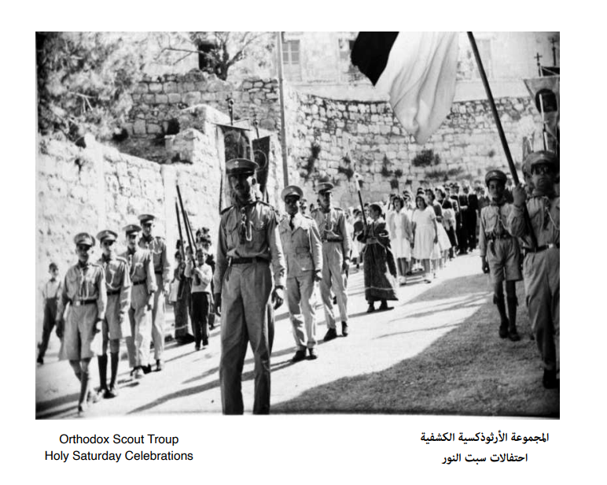

المجموعة الكشفية الارثوذكسية
المجموعة الكشفية الارثوذكسية
عن اللجنة

قامت الجمعية الدينية الأرثوذكسية عام 1956 بدعوة مجموعة من الشباب في المدينة لا يزيد عددهم عن عشرين شخصاً من اجل تشكيل فرقة كشفية هدفها الأساسي خدمة الكنيسة والمحافظة على النظام في المناسبات الدنية. وقد تم تشكيل المجموعة وبدأت في عطائها ولكن النشاط كان محصوراً في عدد قليل من الافراد تم تزويدهم ببعض القطع الموسيقية. وفي العام 1962 تطورت الحركة الكشفية في منطقة بيت لحم وانشئ اتحاد المجموعات الكشفية، وكان للمجموعة الأرثوذكسية دور طليعي في وضع نظامه الداخلي وتم تدريب العديد من الكوادر الكشفية للأشراف على الحركة الكشفية
توقفت الحركة الكشفية في فلسطين في العام 1967 نتيجة الحرب، وبعدها في العام 1970 تطورت المجموعة الكشفية البيتجاليه وتم فتح باب الاشتراك امام الشباب والفتيات في المدينة للانضمام الى سلك الحركة الكشفية ووصل عدد المشتركين فيها في العام 1984 الى ما يقارب على 250 فردا. وتطورت الحركة الكشفية في فلسطين بشكل عام ومن ضمنها المجموعة الكشفية البيتجاليه حيث شهدت الحركة قفزه نوعيه في نشاطها حتى العام 1987. ولكن نتيجة للانتفاضة الأولى التي استمرت لغايه العام 1995، فقد اقتصر نشاطها داخليا طيلة هذه الفترة. وبعدها اعيد نشاطها بشكل فاعل نتيجة جهد المخلصين من أبناء المدينة والقائمين عليها من افراد المجموعة وقيادتها وما زالت تقدم نشاطها الملموس وبشكل مثابر حتى يومنا هذا. ويبلغ عدد افراد المجموعة حاليا وفي جميع اقسامها 430 فردا وتعمل بشكل نشط في كافة الميادين ضمن عمل المنهاج العلمي الكشفي.

أنشأت المجموعة الأرثوذكسية فرقة موسيقية للقرب من تبرعات واردة من مغتربي مدينتنا الحبيبة بيت جالا في التشيلي وسميت على اسمهم "فرقة مغتربي التشيلي للقرب"، حيث شاركت هذه الفرقة في مناسبات وطنية عديدة في معظم المدن الفلسطينية ان الحركة الكشفية بشكل عام هي حركه تربوية لا سياسية مفتوحة للجميع، وتختلف عن المؤسسات الشبابية كونها تنمي الفرد من الناحية الجسدية والروحية والكشفية. ان الحركة الكشفية ونظام الطلائع او المجموعات الصغيرة تربي الفرد على القيادة وحب الوطن وخدمه المجتمع والانتماء والعطاء والتضحية.
أن الكشاف أسلوب حياه وزرع روح الانتماء وهو عطاء مشترك وينمي الاعتماد على النفس. ان الحركة الكشفية والمشاركة في مخيمات تدريبيه تنمي أيضا المعرفة وقدرات افراد المجموعة حول القانون الكشفي تشارك المجموعة الكشفية في جميع احتفالات المدينة والمنطقة في المناسبات الوطنية والدينية مثل أعياد مار نيقولا، وعيد الميلاد، وعيد الخضر في مدينه اللد وغيرها من المدن. كما شاركت وتشارك المجموعة في الوفود الفلسطينية التي تمثل فلسطين في المشاركات الدولية والعربية. قدمت المجموعة خلال فترة نشاطها ومازالت العديد من الخدمات التي تتناسب واهدافها التي أسست من اجلها وخاصة في الاستعراضات الدينية في كافة المناسبات كما أقامت العديد من المخيمات وشاركت في العديد من الاعمال التطوعية والدورات الخارجية.

واقامت المجموعة الكشفية العديد من المخيمات الكشفية حيث تقدم للمنتسبين للمجموعة الكشفية تدريبات على كيفية الاعتماد الكلي على الذات والمشاركة في مسابقات كشفيه والقيام برحلات خليويه وأيضا المشاركة في فعاليات تحمل الطابع الترفيهي. ان مثل هذه النشاطات تطور إحساس التعاون وتعمل على تقديم المساعدة ودعم العمل الجماعي والعيش كحياة الأجداد والالتصاق بالأرض. وللمجموعة الكشفية الأرثوذكسية دور ريادي في تدريب العديد من القادة من خلال مخيمات التدريب التي تعقد على مستوى المحافظة والوطن، ويشهد للمجموعة الكشفية الأرثوذكسية العربية البيتجاليه ان مخيماتها من أفضل المخيمات في محافظة بيت لحم والوطن حيث شاركت فرقتها الموسيقية في العديد من المناسبات الوطنية. وتقام هذه المخيمات في مناطق مهدده بالمصادرة، حيث تقوم المجموعة الكشفية بالمساعدة في قطف الزيتون وزرع الاشتال ومساعده المواطنين للصمود في ارضهم.
من اهم اهداف المجموع الكشفية هي خدمه المجتمع. اذ ساهمت المجموعة بشكل رئيسي خلال جائحه كورونا في خدمه أهالي المدينة وأيضا في تقديم المساعدة الطبية والغذائية والخدماتية وغيرها الى الأهالي. كذلك قامت المجموعة الكشفية بتعقيم الأماكن العامة والقيام بزراعه الأشجار للمؤسسات. كما ان من اهداف المجموعة الكشفية متابعه نشاطات وتعليم الافراد في المدارس والجامعات لمتابعه الأمور الأكاديمية والسلوكية وتفوق الافراد في الدراسة. تتلقى المجموعة الكشفية دعم كبير من أهالي المدينة وجمعيه الاحسان الأرثوذكسية العربية وهي الجهة المراقبة على المجموعة الكشفية ومن كافة مؤسسات المدينة. للمجموعة الكشفية حساب بنكي رسمي ويقوم محاسبو جمعيه الاحسان الأرثوذكسية العربية بالأشراف على الأمور المالية للمجموعة الكشفية. ويتم تدقيق حسابات المجموعة الكشفية السنوية من ضمن حسابات جمعيه الاحسان بشكل كامل وشامل.